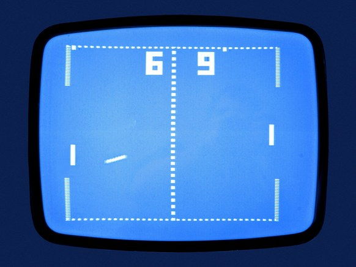

Pong is one of the first video games ever created, in part because it is relatively simple to program. We already came pretty close when we had the block moving around the screen. We just need to add a few more layers to make a basic clone of the original.
In order to prevent random code insertion, Mr. Sacco will be telling you what your draw function will look like. He will list the functions, and you will fill them in.
Open the Pong workspace in CodeHS, which comes prepopulated with a skeleton to get you started.
let x, y;
function setup() {
createCanvas(640, 400);
rectMode(CENTER);
x = width/2;
y = height/2
}
function draw() {
//Draw Everything
background(0);
drawBall();
//Update Variables
moveBall();
}
//draws the ball at the current location
function drawBall() {
}
//move the ball by updating x and y
function moveBall(){
}
Notice how Mr. Sacco has broken up the draw function into two parts: Drawing and Updating. This is a useful strategy to avoid bugs when projects get larger. Each time we do something it will either draw or change variables; rarely both. Inside the draw function you can see that there are two new functions: drawBall() and moveBall(), which currently do nothing. It will be our job to fill them in with their functionality.
For example: the drawBall function is a drawing method that's responsible for displaying the ball. The skeleton is already set up to have the variables x and y. We just need to reference them. Update the drawBall function to be the following.
function drawBall() {
noStroke();
fill(255);
square(x, y, 16);
}
Run the sketch. The ball should appear dead center of the canvas because the setup function initializs the x and y to b the center of the screen. If you change those values you'll notice that the ball draws itself elsewhere.
Note: Mr. Sacco will show you an old fashioned black and white style of Pong. If you want to draw a fancy version that cycles through the rainbow while printing our compliments to Mr. Sacco, you're more than welcome to.
The moveBall function is an Update function, which is meant to update our variables that are linked to the timer. This means we need to change x and y according to their indiviual speeds, like before.
You sketch currently only has x and y, so you will need to add an xSpeed and ySpeed variable. The setup function should randomize each speed variable from -5 to +5.
In the past we've modified the location of the ball directly in the draw function, but our new organization method means that we should put it into the moveBall function, which was previously empty.
function moveBall(){
x += xSpeed;
y += ySpeed;
}
Test it out
When you run your sketch, the ball should appear in the center and then move off in a random direction with no bouncing.
Mouse Retrieval
In order to make testing easier, add a mousePressed function that sets the x and y to the mouseX and mouseY. That will teleport the ball to the mouse every time you click the screen. You could re-randomize the speeds if you like.
Like before, we want the ball to bounce around the canvas, and we'll make a function named wallBounce to help us. Your draw function should be exactly this:
function draw() {
//Draw Everything
background(0);
drawBall();
//Update Variables
moveBall();
wallBounce();
}
There is only one new line of code: a call to wallBounce(). This function doesn't exist, so add it to the end of your sketch:
function wallBounce(){
}
The purpose of this function is to take care of any changes in direction that might be necessary due to bouncing off of the walls. Write this function so that it looks at the values of x and y and decides whether or not to flip the xSpeed or ySpeed variables. This should be done entirely within the wallBounce function with no extra code in draw.
In the end you should be back to the ball bouncing around the canvas, but with a little more organization in the code.
It's time to add the Paddles to our Pong game. The first step is to simply get them drawn without worrying about collision.
Update your draw function to be exactly this:
function draw() {
//Draw Everything
background(0);
drawBall();
drawPaddle1();
drawPaddle2();
//Update Variables
moveBall();
wallBounce();
}
The two new functions are drawPaddle1 and drawPaddle2. Mr. Sacco will refer the the left paddle as 1 and the right paddle as 2. Add each of the new functions to your sketch and add the code to draw each paddle. Right now they don't have to move or interact with the ball. They just need to exist.
Now that the Paddle's appear, we need to make sure that we bounce off of them. The key idea is that each paddle is a horizontal bounce that should occur when the ball hits the paddle. This means that we're going to have to see if the ball overlaps with each paddle.
Let's focus on paddle 1 to get started. Make your draw function exactly this:
function draw() {
//Draw Everything
background(0);
drawBall();
drawPaddle1();
drawPaddle2();
//Update Variables
moveBall();
wallBounce();
bouncePaddle1();
//bouncePaddle2();
}
You will also have to add the bouncePaddle1 function to the end of your sketch:
function bouncePaddle1(){
}
Your job with the bouncePaddle1 function is to see if the ball is currently overlapping with the left paddle, and flip the xSpeed if so.
Hint: Go Get your boxOverlap function from before
In the last assignment you worked hard to get a function that could determine if two boxes were overlapping. This is the perfect scenario for it. Go copy the boxOverlap function from your last sketch and paste it to the end of your Pong sketch. You should make no changes to boxOverlap().
Once you have your copy of boxOverlap() in your sketch, you will not change it. It is now available for use in your bouncePaddle1() function. Add a single if statement to bouncePaddle1() that will call boxOverlap
function bouncePaddle1(){
if( boxOverlap( , , , , , , , ) ){ // Incomplete: Fill in x,y,w,h for the ball and the left paddle.
}
}
You will have to provide the values that represent the ball's x,y,w,h and the left paddle's x,y,w,h. It will be eight parameters, making an ugly line of code. Feel free to ask Mr. Sacco for help filling it in.
If done properly, the if statement will trigger any time that the ball overlaps the left paddle. This is when we want the ball to bounce, so add code that will flip the xSpeed as if it were bouncing off the left wall.
Testing using mousePressed
The problem with testing is that we need to see how the ball responds when it's near the edge of the paddle, but it's bouncing around randomly. You can get a little control over the ball by having the mousePressed function telepor the ball to the mouse and set the speeds so that it's headed directly to the left.
function mousePressed() {
x = mouseX;
y = mouseY;
xSpeed = -3;
ySpeed = 0;
}
This allows you to click around to place the ball, but always have it shoot left.
Once you've got Paddle1 bouncing, follow a similar process to incorporate the right paddle into the equation. Add a bouncePaddle2() function that will handle the paddle on the right of the screen. Don't forget to modify the draw() function to call bouncePaddle2().
The paddles don't have to move yet, but the ball should bounce off of both paddles.
The way that we're handling the paddles has a problem. If it enters the paddle from the top or bottom it will vibrate all the way through the paddle until it shoots out the bottom.
Change your mousePressed to be this:
function mousePressed() {
x = mouseX;
y = mouseY;
xSpeed = -3;
ySpeed = 5;
}
This has a steep ySpeed so that you can direct the ball to the top of the paddle. If you do, you'll notice that you have a vibration problem.
Fix your code to bounce off paddle1 when moving left. Right now the bouncePaddle1 function only looks at the location of the ball and the paddle when determining if it should bounce. Modify it so that it also looks at the xSpeed variable and only bounces if the ball is moving to the left (xSpeed is negative). This should prevent the paddles from accidentally bouncing the ball back into themselves.
Once you do this you'll notice that the ball will pass right through the paddle when it bounce from behind. Go ahead and allow this. In the final version of our game you will remove the outside walls and backwards motion will be impossible.
Fix the vibration problem for both paddle1 and paddle2. Test out both sides fully by modifying your mousePressed and making sure that things work properly.
In the long run we're going to want these paddles to move in some way to make the game more fun. This means more variables! The paddles don't move in the x direction, so we really only need to keep track of their y. Add two global variables to the sketch: p1Y and p2Y. The setup function should initialize them to be height/2, dead center of the canvas.
Make the sketch depend on these variables by going to both of the drawPaddle functions and editing the y coordinate to be a global varaible instead of a constant value.
Test out to make sure that p1Y and p2Y actually control the paddle's location by running your sketch with different values assigned to them during setup. Smaller values should place them closer to the top of the screen.
The bouncePaddle functions were also previously set up to check a very specific location on the screen. This will cause the ball to bounce off of an invisible paddle in the center of the screen, no matter where the paddle is being drawn. Again, update the bouncePadde functions to use one of the global variables as the paddle's y coordinate.
Test, Test, Test
Test out your program a lot. Set p1Y and p2Y to different values in the setup, and then use the mousePressed function to make sure that the ball bounces off of the paddle when it should. No ghosting!
Most students think that the paddle is moved directly when the key is pressed, but it isn't. In order to get smooth paddle movement we need to attach it to the timer. Make your draw function exactly this:
function draw() {
//Draw Everything
background(0);
drawBall();
drawPaddle1();
drawPaddle2();
//Update Variables
moveBall();
movePaddles();
wallBounce();
bouncePaddle1();
bouncePaddle2();
}
The new function is movePaddles, is in charge of changing the paddle's y variable if the keys are being pressed. This is a good time to use p5's keyIsDown() function, that takes a keycode and returns a boolean telling us if the key is currently pressed.
Player 1 should be controlled by the 'W' and 'S' keys, which are keycodes 87 and 83. Copy the starter code for movePaddles. which takes care of when W is held for you.
function movePaddles() {
//If 'W' is held, move up
if( keyIsDown(87) ){
p1Y -= 3;
}
}
If you run this, you should gain the ability to move the paddle UP when you press the W key, but no way of going down. Add another if statement to the movePaddles() function that will increase p1Y when S is held (keycode 83).
After testing the W and S keys together, add two more if statements that tie the p2Y variables to the up and down arrows: keycodes 38 and 40 respectively.
If done properly, you should have two paddles that can move.
The speed of 3 is an arbitrary number, if you would like faster or slower paddles, change the number accordingly.
In the end you should have control over both paddles and the ball should still bounce wherever it is. There will still be the 'phasing through; problem, but that is not an issue.